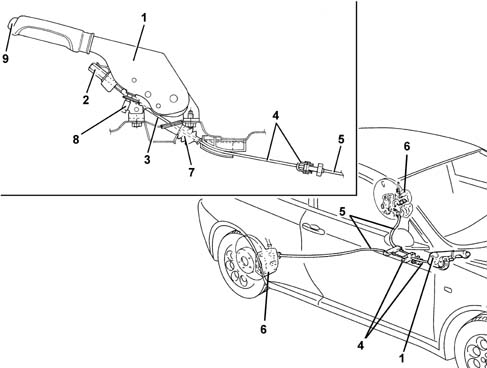

3380A HANDBRAKE CONTROL AND LINKAGE
- Path
- Descriptions > 33 BRAKING SYSTEM > 3380 HANDBRAKE > 3380A HANDBRAKE CONTROL AND LINKAGE
- Kind
- system description
- Applies to
- all engines; all production periods
- Interactive page
- https://sloeber94.github.io/elrnDB-aGt/en/#/125000360
Applies to: all engines; all production periods
CONSTRUCTION FEATURES
The handbrake mechanism consists of a lever located between the two front seats, which operates a rocker to which are anchored two flexible links, connected in turn to the parking brake levers present on the rear brake calipers.
A protective gaiter at the point where the rocker operating link passes from the passenger compartment to the underbody prevents water and dirt entering the car.
VIEW OF HANDBRAKE ASSEMBLY

1 - Handbrake lever
2 - Adjustment nut
3 - Threaded flexible link
4 - Rockers
5 - Flexible links
6 - Brake calipers
7 - Protective boot
8 - Switch signalling handbrake applied
9 - Release button
OPERATION
When the handbrake lever is raised, a flexible cable connected to a rocker is operated. The rocker is responsible for balancing and distributing traction force beteen the two flexible links anchored to it. Its movement controls the operation of levers on the rear brake calipers in order to engage the handbrake.
The flexible cable connected to the lever comes with a threaded end so that the travel of the control lever between the two front seats can be adjusted from inside the car.
When the handbrake lever is pulled up, the indicator switch turns on a panel warning light via the Body Computer
Characteristic of working principle 5505 INSTRUMENT/GUAGE ELECTRICAL WIRING
. A warning buzzer goes off if the car sets off with the handbrake still on
Characteristic of working principle 5560 INSTRUMENTS
.
The handbrake is kept engaged by a toothed sector that prevents the handle being lowered.
When the release button is pressed, the lever is released and the tension of the links on the levers may be slackened. The levers then release the handbrake under the action of the return spring.